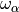

11. Analysis: other options
11.1. Infrared
11.1.1. Dipole AutoCorrelation Function
available for trajectories only

11.2. Macromolecules
This section has one subsection, Lipids, which contains following Plugins:
Refolded Membrane Trajectory
11.2.1. Refolded Membrane Trajectory
available for trajectories only

membrane axis
Format: drop-down
Default: c
Description: the axis along which is used for the trajectory manipulation, the normal to the membrane.
name of the lipid of the upper leaflet
Format: str
Default: DMPC
Description: the name of the lipid positioned in the upper leaflet of the membrane. It will be repositioned into the upper part of the simulation box. The name must be the name with which MMTK refers to the lipid.
name of the lipid of the lower leaflet
Format: str
Default: DMPC
Description: the name of the lipid positioned in the lower leaflet of the membrane. It will be repositioned into the lower part of the simulation box. The name must be the name with which MMTK refers to the lipid.
11.3. Thermodynamics
This section contains the following Plugins:
11.3.1. Density
available for trajectories only

11.3.2. Temperature
available for trajectories only

11.4. Trajectory
The Plugins within this section are listed below. They are used to adjust the trajectory in some way.
11.4.1. Box Translated Trajectory
available for trajectories only

11.4.2. Center Of Masses Trajectory
Theory and implementation
The Center Of Mass Trajectory (COMT) analysis consists in deriving the trajectory of the respective centres of mass of a set of groups of atoms. In order to produce a visualizable trajectory, MDANSE assigns the centres of mass to pseudo-hydrogen atoms whose mass is equal to the mass of their associated group. Thus, the produced trajectory can be reused for other analysis. In that sense, COMT analysis is a practical way to reduce noticeably the dimensionality of a system.
GUI
available for trajectories only

11.4.3. Cropped Trajectory
available for trajectories only

11.4.4. Global Motion Filtered Trajectory
Theory and implementation
It is often of interest to separate global motion from internal motion, both for quantitative analysis and for visualization by animated display. Obviously, this can be done under the hypothesis that global and internal motions are decoupled within the length and timescales of the analysis. MDANSE can create Global Motion Filtered Trajectory (GMFT) by filtering out global motions (made of the three translational and rotational degrees of freedom), either on the whole system or on a user-defined subset, by fitting it to a reference structure (usually the first frame of the MD). Global motion filtering uses a straightforward algorithm:
for the first frame, find the linear transformation such that the coordinate origin becomes the centre of mass of the system and its principal axes of inertia are parallel to the three coordinates axes (also called principal axes transformation),
this provides a reference configuration Cref,
for any other frames f, finds and applies the linear transformation that minimizes the RMS distance between frame f and Cref.
The result is stored in a new trajectory file that contains only internal motions. This analysis can be useful in case where diffusive motions are not of interest or simply not accessible to the experiment (time resolution, powder analysis … ).
GUI
available for trajectories only

reference basis
Format: drop-down
Default: None
Description: can be used exactly like Axis Selection. <insert> what it does
Make the chemical object contiguous
Format: bool
Default: False
Description: makes the configuration contiguous. This is done via MMTK universe’s contiguousObjectConfiguration() method.
11.4.5. Rigid Body Trajectory
Theory and implementation
To analyse the dynamics of complex molecular systems it is often desirable to consider the overall motion of molecules or molecular subunits. We will call this motion rigid-body motion in the following. Rigid-body motions are fully determined by the dynamics of the centroid, which may be the centre-of-mass, and the dynamics of the angular coordinates describing the orientation of the rigid body. The angular coordinates are the appropriate variables to compute angular correlation functions of molecular systems in space and time. In most cases, however, these variables are not directly available from MD simulations since MD algorithms typically work in cartesian coordinates. Molecules are either treated as flexible, or, if they are treated as rigid, constraints are taken into account in the framework of cartesian coordinates [23]. In MDANSE, Rigid-Body Trajectory (RBT) can be defined from a MD trajectory by fitting rigid reference structures, defining a (sub)molecule, to the corresponding structure in each time frame of the trajectory. Here ‘fit’ means the optimal superposition of the structures in a least-squares sense. We will describe now how rigid body motions, i.e. global translations and rotations of molecules or subunits of complex molecules, can be extracted from a MD trajectory. A more detailed presentation is given in [24]. We define an optimal rigid-body trajectory in the following way: for each time frame of the trajectory the atomic positions of a rigid reference structure, defined by the three cartesian components of its centroid (e.g. the centre of mass) and three angles, are as close as possible to the atomic positions of the corresponding structure in the MD configuration. Here ‘as close as possible’ means as close as possible in a least-squares sense.
Optimal superposition. We consider a given time frame in which the atomic positions of a (sub)molecule are given by
(11.1)
. The corresponding positions in the reference structure are denoted as
(11.2)
. For both the given structure and the reference structure we introduce the yet undetermined centroids X and X(0), respectively, and define the deviation
(11.3)
Here D(q) is a rotation matrix which depends on also yet undetermined angular coordinates which we chose to be quaternion parameters, abbreviated as vector q = (q0, q1, q2, q3). The quaternion parameters fulfil the normalization condition
(11.4)
[25]. The target function to be minimized is now defined as
(11.5)
where  are atomic weights (see Section ??). The minimization with respect to the centroids is decoupled from the minimization with respect to the quaternion parameters and yields
(11.6)
(11.7)
We are now left with a minimization problem for the rotational part which can be written as
(11.8)
The relative position vectors
(11.9)
(11.10)
are fixed and the rotation matrix reads [25]
(11.11)
Quaternions and rotations. The rotational minimization problem can be elegantly solved by using quaternion algebra. Quaternions are so-called hypercomplex numbers, having a real unit, 1, and three imaginary units, I, J, and K. Since IJ = K (cyclic), quaternion multiplication is not commutative. A possible matrix representation of an arbitrary quaternion,
(11.12)
reads
(11.13)
The components  are real numbers. Similarly, as normal complex numbers allow one to
represent rotations in a plane, quaternions allow one to represent
rotations in space. Consider the quaternion representation of a vector
r, which is given by
are real numbers. Similarly, as normal complex numbers allow one to
represent rotations in a plane, quaternions allow one to represent
rotations in space. Consider the quaternion representation of a vector
r, which is given by
(11.14)
and perform the operation
(11.15)
where Q is a normalised quaternion
(11.16)
The symbol tr stands for ‘trace’. We note that a normalized quaternion is represented by an orthogonal 4 x 4 matrix. R’ may then be written as
(11.17)
where the components x’, y’, z’, abbreviated as r’, are given by
(11.18)
The matrix D(q) is the rotation matrix defined in 95.
Solution of the minimization problem. In quaternion algebra, the rotational minimization problem may now be phrased as follows:
(11.19)
Since the matrix Q representing a normalized quaternion is orthogonal this may also be written as
(11.20)
This follows from the simple fact that
(11.21)
, if Q is normalized. Eq. 104 shows that the target function to be minimized can be written as a simple quadratic form in the quaternion parameters [24],
(11.22)
(11.23)
The matrices M_ are positive semi-definite matrices depending on the
positions  and
and  :
:

The rotational fit is now reduced to the problem of finding the minimum of a quadratic form with the constraint that the quaternion to be determined must be normalized. Using the method of Lagrange multipliers to account for the normalization constraint we have
(11.24)
This leads immediately to the eigenvalue problem
(11.25)
(11.26)
Now any normalized eigenvector q fulfils the relation
(11.27)
. Therefore, the eigenvector belonging to the smallest eigenvalue, λmin, is the desired solution. At the same time λmin gives the average error per atom. The result of RBT analysis is stored in a new trajectory file that contains only RBT motions.
GUI
available for trajectories only

reference
Format: int
Default: 0
Description: the number of the frame that is used as reference.
remove translation
Format: bool
Default: False
Description: <insert>
11.4.6. Unfolded Trajectory
available for trajectories only

11.5. Virtual Instruments
11.5.1. McStas Virtual Instrument
available for trajectories only


MDANSE Coherent Structure Factor
Format: str
Default: ..\..\..\Data\NetCDF\dcsf_prot.nc
Description: the path to a calculated Coherent Structure Factor. The file must be in MMTK NetCDF file and should have been generated with MDANSE’s Dynamic Coherent Structure Factor analysis <link>.
MDANSE Incoherent Structure Factor
Format: str
Default: ..\..\..\Data\NetCDF\disf_prot.nc
Description: the path to a calculated Incoherent Structure Factor. The file must be in MMTK NetCDF file and should have been generated with MDANSE’s Dynamic Incoherent Structure Factor analysis <link>.
temperature
Format: strictly positive float
Default: 298.0
Description: the temperature in Kelvin at which the MD simulation was performed.
trace the 3D view of the simulation
Format: bool
Default: False
Description: <insert>
mcstas instrument
Format: drop-down
Default: None
Description: <insert>
mcstas options
ncount
Format: int
Default: 10000
Description: <insert>
dir
Format: str
Default: None
Description: <insert>
mcstas parameters - these options become visible once a McStas instrument has been chosen.
11.5.1.1. Miscellaneous
This section normally contains only one Plugin, which is present for both trajectories and analysis results. However, some other Plugins appear under certain circumstances.
11.6. Data info
available for trajectories and analysis results
This plugin opens a window containing an overview of the data stored in the selected NetCDF file. For trajectory files, it might look like the picture below, while it may not be able to read any data from an analysis result. Generally, the following information should be included for a trajectory:
Location of the trajectory on disk
Number of time steps
Universe (the MMTK object)
Direct cell at the beginning
Reciprocal cell at the beginning
List of molecules
List of variables contained in the trajectory

11.7. Animation
available for trajectories only
appears only when Molecular Viewer is active
Once double-clicked, it creates a new bar below Molecular Viewer that allows you to watch the whole MD simulation.

Skip to the beginning button (leftmost) sets the frame number (15 in the picture above) to 0.
Play button starts the simulation at the speed determined by the rightmost box (95 in the picture above)
Skip to the end button (right of Play) sets the frame number to the last frame in the trajectory.
The left sliding bar allows you to select any of the frames in the trajectory. It displays the frame number by altering the Frame number box to the left of itself.
Frame number box allows you to view a frame by typing in its index. Press enter to view the frame.
The right sliding bar allows you to alter the speed at which the simulation is shown. It also shows the speed in the box to the left of itself.
Speed determines how fast the simulation is displayed. The higher the number, the faster the playback.
11.8. Density Superposition
available for trajectories only
appears only when Molecular Viewer is active and you have left-clicked anywhere inside it
Double-clicking this opens the following window:

Select file
Format: drop-down
Default: None
Description: first, a file has to be found using the Browse button, and then it can be found in the drop-down menu. This file has to be the result of Molecular Trace analysis.
Shape
Format: str
Default: loaded from file
Description: cannot be edited.
Rendering mode
Format: drop-down
Default: surface
Description: determines the way in which the Density Superposition is displayed.
Opacity level
Format: float between 0 and 1
Default: 0.5
Description: the opacity/transparency of the Density Superposition.
Contour Level
Format: sliding bar
Default: 0
Description: determines the level of detail?<insert>
Clear button removes the Density Superposition from Molecular Viewer.
Draw button add Density Superposition on top of Molecular Viewer.
11.9. Trajectory Viewer
Available for trajectories only
appears only when Molecular Viewer is active
This plugin was designed to help visualise the variables contained in a trajectory. It can only plot the 3D trajectory variables, and nothing else. It does this by separating the chosen 3D variable into its constituent 1D parts and plotting those. This way, the x, y, or z component of a chosen variable can be plotted for one atom against time. Once it is double-clicked, the following window opens:

The plotting is controlled through the panel at the top, which is unique to the Trajectory Viewer. The plot is visualised immediately after all three fields are filled. It consists of these parameters:
Trajectory
Format: drop-down
Default: None
Description: the variable that will be plotted. All 3D variables present in the trajectory are available for plotting, meaning that configuration (i.e., positions) can always be plotted, and velocities and gradients if they are present.
Atom
Format: positive int
Default: 0
Description: The atom for which the chosen variable will be plotted. The number represents the index of the atom in the trajectory. The arrows next to this box can be used to navigate the atoms one by one. If a number larger than the number of atoms is inputted, the last atom will instead be selected.
Dimension
Format: drop-down
Default: None
Description: the spatial component of the selected variable which will be plotted. For example, the change in position of a specific atom along the x-axis over time can be plotted. The x, y, and z components of the ‘variable’ vectors are available for plotting.
The menu at the bottom of the plotter is identical to the one used in Line Plotter, and so the description of its function can be found there. However, there is some difference in that; at the very bottom of the Trajectory Viewer window are three options which work differently here:
Clear button removes all the lines from the plot.
Plot on same figure
Format: Bool
Default: False
Description: controls the number of lines that can be plotted simultaneously.
When it’s unticked (i.e., False) only one line can be plotted at a time. Therefore, when a line is already plotted and any change is made in the topmost toolbar, the current line is replaced by the new selection.
When it’s ticked (i.e., True), any number of lines can be plotted. Therefore, when a line is already plotted and any change is made in the topmost toolbar, a new line is added.
Show legend
Format: Bool
Default: False
Description: Toggles the legend. When False, the legend is hidden. When True, the legend appears in the location matplotlib determines as ‘best’.
This section only appears if you have used the Save analysis template button in the main window’s toolbar. It contains all the analyses created this way and allows them to be run.
11.10. 2D/3D Plotter
available for analysis results only
Launches the 2D/3D Plotter inside the current tab of the working panel, like below. For more information, please see 2D/3D Plotter.

This section contains all the definitions/selections that have been made for the selected NetCDF file, serving similar purpose to User definition editor.
11.11. Molecular Viewer
available for trajectories only
Double-clicking on this option opens the Molecular Viewer plugin inside the current tab of the Working panel. This shows a simulated 3D view of the first frame of the trajectory. The Viewer can be interacted with by dragging the simulation and zooming in/out. It can be closed using the x button in the top right corner:

Clicking on an atom highlights it and prints out some basic information about it in the Logger<link>. More options are available by right-clicking anywhere inside the Molecular Viewer, which brings up the following menu:

Rendering brings up a menu of rendering options when hovered over or clicked. These change the way the system is displayed and should both self-explanatory and familiar from other molecular visualisation software.
Show/hide selection box creates a box around the whole system. This disables your ability to move and rotate the system, but instead you can move the faces of the box by dragging the large balls. Everything inside the box is highlighted and considered selected.

Save selection opens a window prompting you to enter a selection name. Once that is done and OK is pressed, the selection will be saved for the current trajectory using the atoms that have been selected by either clicking on them or with the selection box above.
Clear selection unselects all the selected atoms. It does not hide the selection box, so interacting with it will once again select all the atoms inside it.
Parallel projection toggles on/off trimetric parallel projection of the camera. According to Wikipedia [26], this means that three axes of space should appear unequally foreshortened. The scale along each of the three axes and the angles among them are determined separately as dictated by the angle of viewing.
Show/hide bounding box shows/hides the simulation box within which the system is bound.
When an analysis is started by clicking on the Run button, it appears as a job in this panel, like so:

NAME field shows the unique name MDANSE assigned to the job. It is also a button which shows the options that were selected for the analysis:

PID field shows the process ID assigned by the operating system to the job process.
START field shows the exact date and time when this job was started.
ELAPSED field shows the time elapsed since the start of the job.
STATE field shows the state of the job. This can be ‘running’, indicating that MDANSE is in the process of performing the job, ‘finished’, indicating that the job was completed successfully, and ‘aborted’, indicating that the job failed due to an error. This field is also a button which shows the traceback to the error that caused the failure when clicked. This should provide all the information to either correct your mistake or to inform us of a bug. When reporting a bug, please copy the entire traceback from here.

PROGRESS field approximately shows the progress of the job. This is not perfect, so it is not unusual if it appears to get stuck for a long time, especially with large files. When that happens, it is likely that MDANSE is performing a large and computationally intensive stage. MDANSE performs jobs in four stages: initialisation, run, combination, and finalisation. Of these, only the run stage is composed of many steps, after each of which the progress bar is updated. Of the other stages, any can be very computationally intensive yet for them the bar is updated only at the beginning and end of the stage.
ETA field shows the estimated time until the completion of the job. Similar to the progress field, this is not entirely accurate, but it is a good rough estimate.
KILL field contains a button that allows for the cancellation of the job. This causes the job to be removed from this Jobs panel, making space, visually, for more job. If the job was running when it was killed, it will be stopped and no output file will be created. First though, the button will make a notification prompt to appear, asking if you are sure you want to kill the job.